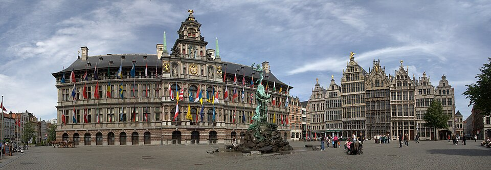
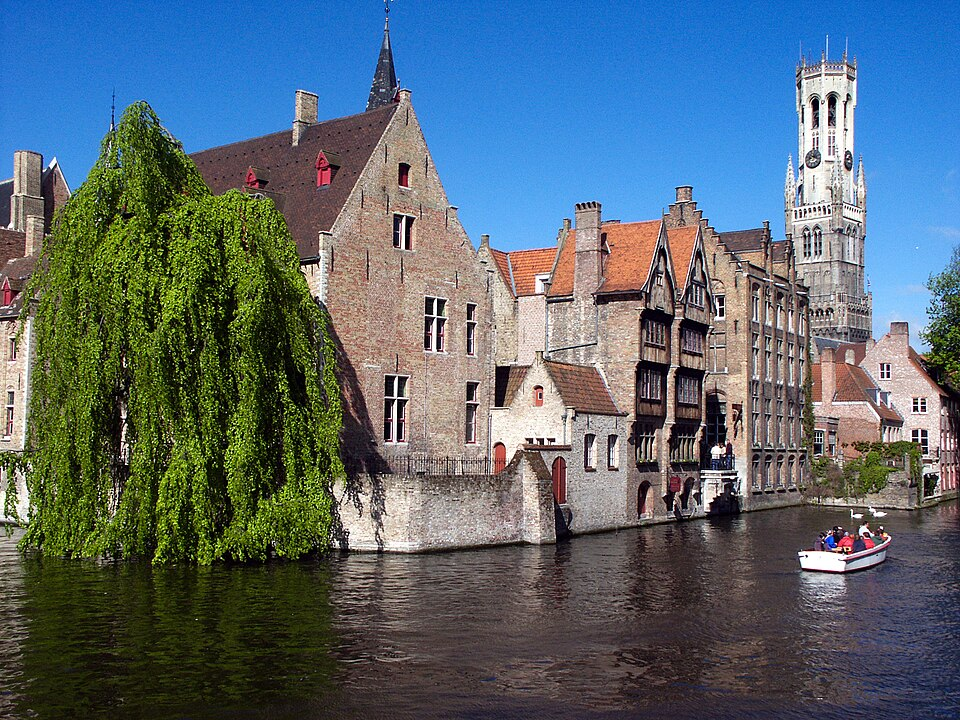
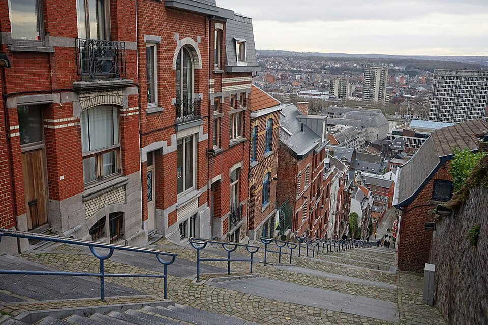

Country guide · 638 verified pins
Belgium
Known for: gaufrefriteschocolate
5 guides · 651 places.

Guides in Belgium5 guides
-

Antwerp
137 places Known forfriteschocolateOnze-Lieve-VrouwekathedraalRecommended by Wikipedia (NL), Gault&Millau België + 67 moreRecommended by Wikipedia (NL) + 68 morePhoto: Maros M r a z ( Maros ) · CC BY-SA 3.0 · Wikimedia Commons (resized)
-

Ghent
108 places Known forfriteschocolateSint-BaafskathedraalRecommended by Visit Gent (officiële stadstoerisme), Wikipedia (NL/EN) + 47 moreRecommended by Visit Gent (officiële stadstoerisme) + 48 morePhoto: Martinvl · CC BY-SA 4.0 · Wikimedia Commons (resized)
-

Brussels
139 places Known forwafflefritesGrand-Place / Grote MarktRecommended by Wikipedia (FR/EN), visit.brussels + 73 moreRecommended by Wikipedia (FR/EN) + 74 morePhoto: Theedi · CC BY-SA 4.0 · Wikimedia Commons (resized)
-

Bruges
123 places Known forchocolatetrappistMarktRecommended by Visit Bruges (official city tourism), Michelin Guide Belgium + 69 moreRecommended by Visit Bruges (official city tourism) + 70 morePhoto: Jean-Christophe BENOIST · CC BY 2.5 · Wikimedia Commons (resized)
-

Liège
144 places Known forgaufrebouletsPalais des Princes-ÉvêquesRecommended by Gault&millau, Wikipedia + 38 moreRecommended by Gault&millau + 39 morePhoto: FriedrichFrisch · CC BY-SA 4.0 · Wikimedia Commons (resized)


Collections in Belgium4 collections · counts from the guides
- 121Michelin & fine diningStarred and bib-gourmand tables, each with its source · across Belgium Liège 59Antwerp 23Bruges 21Brussels 12+1 more guide
- 29World HeritageUNESCO-listed sites, pinned to the door · across Belgium Brussels 12Bruges 7Antwerp 5Ghent 3+1 more guide
- 63Beer halls & brewersTrappist taps, Kölsch and the brown cafés that pour them · across Belgium Antwerp 19Brussels 15Bruges 10Ghent 10+1 more guide
- 103Free to visitMuseums, parks and landmarks that cost nothing · across Belgium Bruges 29Brussels 21Antwerp 19Ghent 19+1 more guide


Elsewhere in Cleo
 United States21 guides · 4,144 places
United States21 guides · 4,144 placesPhoto: Ashley98lee · CC BY-SA 4.0 · Wikimedia Commons (resized)
 Singapore29 guides · 598 places
Singapore29 guides · 598 placesPhoto: William Cho · CC BY-SA 2.0 · Wikimedia Commons (resized)
- Vietnam5 guides · 183 places
 Germany3 guides · 751 places
Germany3 guides · 751 placesPhoto: Mike Peel · CC BY-SA 4.0 · Wikimedia Commons (resized)
 Japan5 guides · 2,092 places
Japan5 guides · 2,092 placesPhoto: Alpsdake · CC BY-SA 4.0 · Wikimedia Commons (resized)